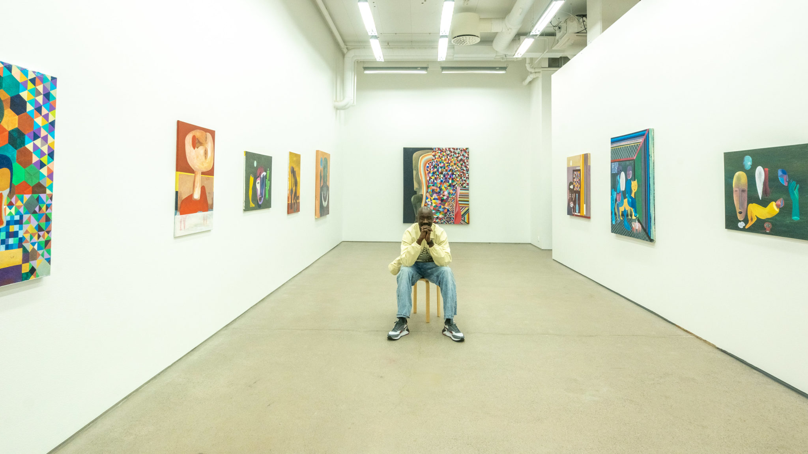

SEPTEMBER, 20, 2021
Sudanese Khalid Shatta on His “Migration of the Soul” Paintings
Photo by André Percey Katombe
- words by Ka Man Mak
Edited by Michael Adade
From Sudan to Oslo, Khalid Shatta’s recent paintings “Migration of
the Soul” were shown at Kunsthall Oslo and Grønland Kirke under the
Oslo Afro Arts Festival for a two-part exhibition to showcase the
work of refugee artists. Kunsthall Oslo, a non-profit art space
located at the heart of Bjørvika which explores the social and
historical context of contemporary art production, had featured
Shatta’s large canvas masterpieces and sketches in their gallery.
Painting has always been living inside Khalid Shatta and he
professed that it is the only language he has known. He believes
that painting was a way for him to understand his childhood and also
perhaps as a healing tool. “We were poor and we could not afford to
buy paints or anything. We lift our finger up in the sky and draw a
fish.” Children, he said have creativity. “I don’t think a lot about
having materials to express my feeling. I can FEEL it.”
In person, Khalid is soft-spoken and pensive, yet his bolts of
laughter at times lightened the souls around him. He fled Sudan,
arriving in Norway nine years ago and now holds Norwegian
citizenship. He voted recently in the Norwegian general election,
something he would not do in his home country as he does not trust
the government. Shatta keeps most of his personal life story private
and doesn’t like to mix it with his artwork. Even when he won the
2012 Education For All: Global Monitoring Report on Youth, Skills
and Work art contest, and was rewarded a trip to Paris to meet the
team. There no one knew about him or his childhood hardship on the
streets. They only knew him through his art.
Reflecting back on the trip to Paris, he paused, in tears with mixed
feelings and empathy, “I feel sad because what about my home? What
about my people? Why is it hard? This is painful.” At the heart of
his work is a desire to change the world. He saw how knowledge and
education changed society, and wanted the same for his people in
Sudan.
Shatta raised questions about our sense of belonging and mental
health, drawing attention to our own disconnection with nature,
people, the universe and the wisdom that was passed down from
ancient civilisations. Through his paintings, “Migration of the
Soul”, he was not referring to the physical migration but rather
“the sensation of being out of place or not at home,” and “where we
belong in spirit.”
Portrait of Khalid Shatta. Photo: André Percey Katombe/The Oslo Desk
“We live in a time where many people feel a disconnection to their
own bodies and existence. The works of “Migration of the Soul” take
as their subject matter our understanding of ourselves and the
universe in which we are living,” said Shatta to Oslo Afro Arts
Festival.
Before moving to Europe, Shatta had a positive image of Europe and
US, being the best places to live for anyone because of the supposed
equality and freedom that can be found, “People seemed happier
there. So, when I came to Europe, the image totally changed. I get a
lot of things here where I haven’t dreamed about. […] But at the
same time, […] It was my first time that I got to know what stress
means. I didn’t know that in my country. Despite the war and
everything, we were happy in a way. I felt like, there is humanity
in Africa, whilst here it is low.” He believed that we can live
together if we only open our hearts.
Body, Nature and Soul
His art also discussed how our memories, stress, trauma and
depression prevented us from utilising our full potential and from
enjoying the beautiful aspects of the world. Through migrating to
Europe, he started to understand why people had attempted to take
their own lives and had similar thoughts himself.
“I feel like we are artificial beings in this universe. Because my
story in life is really hard. No one can imagine it. But everyone
has a story. Sometimes I can’t believe how it goes. Imagine someone
who left his country because of war. […] And then some are here.
Some of us became a victim in their own stories. I have a lot on my
mind. Like stress and trauma, and also, I get really depressed too.
It happened to me too. It makes me understand other people’s choice
too.”
Shatta has tried to find peace within himself through art. He
believes that help should be given to those who need it and we
should thank ourselves for doing good things, “We need to look to
the other side of life that is beautiful.”
For him, the paintings were a way for him to continue where his
ancestors have started as they always used “art to reflect the
beauty of their time.” Shatta fondly spoke and praised his ancestors
and the ancient civilisation where they didn’t have the kind of
resources that we have today to build the pyramids, and how
respectful they were with mother nature.
“If you look at the ancient people they made something that we are
now enjoying it. I feel like we have more access, more than them. We
can make something more than that.” He playfully imagined the idea
of people in the past coming to the present moment, and seeing what
humankind has created, they would be wowed he thought.
Motifs in his paintings
Weaving into his paintings are motifs that are deeply symbolic and
represent deep cultural meanings anchored in his inspirations from
ancient civilisations and his birthplace Sudan – its history and
culture. The technique and style drew upon modernist painters, such
as Hussein Gamaan, Kerry James Marshall, Jean-Michel Basquiat, Paul
Klee, as well as photographers like Malick Sidibé, Seydou Keïta and
Gordon Parks.
The motifs in his paintings drew attention to these inspirations
that were close to his heart and he wanted people to “dig deep into
themselves” and how they were functioning in society. As a Nuba
descendent, he tried to uncover his cultural heritage and identity
that was lost under Islamic rule and European colonialism.
“I make use of ancient Kemetic and Cushitic symbols from the
historical kingdoms of the Nile valley civilisations. I believe that
everything is connected through our shared history, even in this
chaotic state of migration,” said Shatta to Kunsthall Oslo.
Khalid Shatta is a nickname he goes by, and the meaning of ‘Shatta’
draws from a hot spicy sauce found in Sudan and many countries in
the Middle East. Shatta is also an African Nuba name used socially
in the regions of the Nuba mountainous, Gambia, Ghana, Mali and
Senegal. He chuckled at the multi-layered meaning of his nickname.
In one of his paintings, he pointed out the motifs of the mask and
time, “because for me everything is all about time. We wear the mask
within time. […] I’m trying to reveal what is behind the mask. I’m
trying to show what is behind that, and also especially for example
in Sudan, we have a lot of identity issues. For me, I think it is
important to think about that. People came to enslave us, I can say
that because it is part of history.”
He read aloud his beloved quote from John Henrik Clarke, “History is
not everything, but it is a starting point. History is a clock that
people use to tell their political and cultural time of day. It is a
compass they use to find themselves on the map of human geography.
It tells them where they are but, more importantly, what they must
be.”
Quote on Khalid Shatta’s painting. Photo: Ka Man Mak/The Oslo Desk.
John Henrik Clarke is a professor, well-known for pioneering
Africana Studies, and for studying and documenting the histories and
contributions from Africans and the African diaspora at the time of
prevailing Eurocentric views in academia.
“I love that [quote] because if we know who we are, we know where we
belong. Also, I believe that in this generation, this is
particularly important because of the demonstration for George
Floyd. […] I went to Stortinget (translate: Norwegian parliament)
and I feel like the oldest one at the protest. This is beautiful.”
Seeing younger generations joining the protest, “I feel like we are
in good times. I feel like we have a revolution. […] I felt that
these people standing there, are making the world a better place.
[…] I felt like those generations, they will one day be in charge in
this country.”
Sudan. Photo: Art Khalid Shatta
Another motif he paid homage to in his painting is ‘Sudan’ – the
last existing male northern white rhinoceros, who passed away in
2018. He wanted to explore how it would feel to be the last standing
animal in the universe, and at the same time examine the bond
between people and nature, especially living in concerning times of
climate change and environmental pollution.
“Humans are really far away from nature, from animal, and even
because of us, it no longer lives. […] I also use cactus in my
painting, because the way it looks, sometimes it can be scary for
some people but cactus has the most beautiful flowers you can see.
Also, it can save you if you are lost in the desert. […] People also
use it for healing,” he expanded.
The Garden of Colours and Diversity
When asked about the colour palettes he chose, he said, “Imagine you
have a garden and only white flowers, you get stressed with one
colour, but if you have a garden full of colours you will enjoy it.
This is what it means to be together; This is the meaning of
diversity.” He believes that art is to connect, and used the garden
metaphorically to describe his experience at Oslo Afro Arts
Festival, “It means something, not just for Africans. This is a
garden of flowers because you see the diversity. It’s beautiful. I
feel like we are here, not WE ARE HERE. What we are doing, people
need to see that.”
This was the first time that Shatta participated at the Oslo Afro
Arts Festival, and got to meet other Sudanese as well as Sudan’s
ambassador. He doesn’t want to just represent Sudan, but every human
being, “Because we need each other. We have enough. Our ego makes us
blind sometimes.”
He hoped that one day people will see and heal themselves through
his art, “I am trying to create a safe space where they can feel
calm. I don’t want them to think that I created all these beautiful
paintings. But I need them to question themselves. Why are we here?
Because it is important. Who you are? What is your purpose in life?
Because we are all a part of history. We are making history.
Everyone can try to write their name in history. You can be the
worse one or the good one.”
Shatta showed me another painting, “This painting, it’s an ear,
listening to the universe. You can see here that we connect
together. I like to be at a higher place. I feel like I am owning
the world. It is good sometimes to see ourselves that way. No one
[else] can give that to us.”
Shatta often got asked whether he got inspired by “Norwegian this
and that” and he told them, “[…] yes I did get inspired, but we
don’t have to take it as figures or colours. Because I am in Norway,
I am able to create this in this safe space. Because of this, I made
this. There is always inspiration everywhere.”
Art – a Double-edged sword for Shatta
A threat came to him and his family that changed the trajectory of
his life in 2012 and solidified his move to Europe. An exhibit in
Sudan that invited the British ambassador to see his photos of the
beauty of the Nabu mountains where he grew up was a sensitive
region. After being expelled from university, he realised just how
serious the situation was. However, his childhood hardship and
political threats didn’t stop Khalid Shatta from pursuing his art.
He applied to numerous art contests and won one, sending him to
Paris for the launch of the report, 2012 EFA Global Monitoring
Report on Youth, Skills and Work, which was mentioned before.
For Shatta, art never disappointed him, even in troubled time, “Art
can put you in trouble, and it can also save you. Through art, I’m
trying to change the world.”
In the future, Shatta said he will continue working on his theme
“Migration of the Soul” to introduce sculptures and performing art
into this body of work, “I think there is more to come. Art is
bigger than my own imagination. I feel that something is coming.” He
added further, “The future is always bright when we understand our
time.”
This article is part of a journal series produced by The Oslo Desk in collaboration with Oslo Afro Arts Festival.